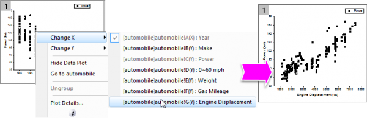
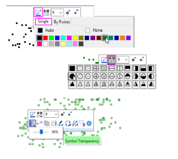
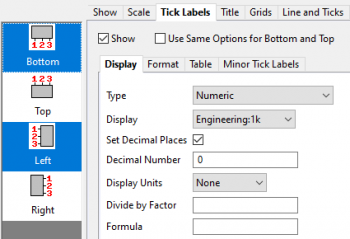
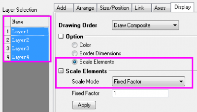
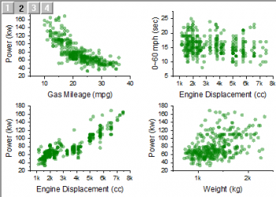
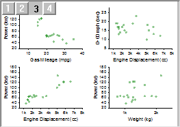

Diagramme zusammenfügen und anordnen
GSB-Merge-Arrange-graphs
In dieser Lektion erstellen Sie einige Diagramme, fügen diese zusammen und ordnen dann die Layer in dem zusammengefügten Diagramm an. Sie werden das Diagramm außerdem als eine klonbare Vorlage speichern, um das Diagramm aus ähnlichen Daten schnell neu erstellen zu können.
Daten importieren und Diagramme erstellen
- Öffnen Sie die Projektdatei, die Sie in Lektion 3: Datenauswahl gespeichert haben. Erstellen Sie im Projekt Explorer, einen neuen Ordner unter dem Hauptverzeichnis und geben Sie ihm den Namen Diagramme zusammenfügen. Klicken Sie auf den leeren Ordner, um ihn zu öffnen.
- Klicken Sie auf die Schaltfläche Neue Arbeitsmappe
 auf der Symbolleiste Standard, um eine neue Arbeitsmappe zu erstellen. Wählen Sie Hilfe: Ordner öffnen: Sample-Ordner ... im Menü, um den Ordner "Samples" zu öffnen. Öffnen Sie in diesem Ordner den Unterordner Statistics. Dort befindet sich die Datei automobile.dat. Ziehen Sie diese Datei per Drag&Drop in das leere Arbeitsblatt, um sie zu importieren.
auf der Symbolleiste Standard, um eine neue Arbeitsmappe zu erstellen. Wählen Sie Hilfe: Ordner öffnen: Sample-Ordner ... im Menü, um den Ordner "Samples" zu öffnen. Öffnen Sie in diesem Ordner den Unterordner Statistics. Dort befindet sich die Datei automobile.dat. Ziehen Sie diese Datei per Drag&Drop in das leere Arbeitsblatt, um sie zu importieren.
- Klicken Sie auf den Header von Spalte C, um die gesamte Spalte auszuwählen. Klicken Sie auf die Schaltfläche Punktdiagramm
 auf der Symbolleiste 2D-Grafiken, um ein Punktdiagramm zu erstellen.
auf der Symbolleiste 2D-Grafiken, um ein Punktdiagramm zu erstellen.
- Klicken Sie auf das Punktdiagramm, um es auszuwählen. Klicken Sie dann mit der rechten Maustaste auf die Zeichnung und wählen Sie X ändern: [automobile]automobile!G(Y):EnginDisplacement im Kontextmenü, um die X-Daten zu ändern. Eine Erinnerungsmeldung wird angezeigt und fragt Sie, ob Sie das Diagramm neu skalieren möchten. Wählen Sie Ja und klicken Sie auf OK.
 |
Erinnerungsmeldungen verfügen über mehrere Optionen. Wenn Sie Ja, und in Zukunft genauso, keine weitere Rückfrage wählen, wird der Dialog nicht erneut angezeigt. Sie können alle Erinnerungsmeldungen im Menü Hilfe: Alle Hinweise reaktivieren reaktivieren.
|

- Markieren Sie die Legende und drücken Sie die Taste Entf, um sie zu löschen.
- Nun machen Sie Kopien von diesem Diagramm und ändern die Daten in den Kopien. Gehen Sie zuerst zurück zu dem Arbeitsblatt und klicken Sie auf die Schaltfläche X oben rechts von der Titelleiste. Wählen Sie in dem aufgerufenen Dialog Verbergen. Diese Option verbirgt das Fenster einfach auf der Bedienoberfläche.
|
Verborgene Fenster werden mit einem "abgeblendeten" Symbol im unteren Bedienfeld des Projekt Explorer angezeigt. Sie können doppelt auf den Eintrag klicken, um das Fenster erneut zu öffnen.
|
- Klicken Sie mit der rechten Maustaste auf die Titelleiste des Diagrammfensters und wählen Sie Duplizieren, um eine Kopie zu erstellen. Tun Sie dies zweimal, so dass Sie am Ende vier Diagrammfenster haben.
- Wählen Sie im Menü Fenster: Vertikal anordnen, um die 4 Diagramme ohne Überschneidung anzuordnen.
- Verwenden Sie die Menüelemente X ändern/Y ändern, wie zuvor beschrieben, um die X/Y-Zuweisungen für die kopierten Diagramme wie unten zu ändern, und führen Sie bei Aufforderung eine Neuskalierung durch:
- Kopie 1: Ändern Sie Y in [automobile]automobile!D(Y):0^60 mph.
- Kopie 2: Ändern Sie Y in [automobile]automobile!E(Y):Weight.
- Kopie 3: Ändern Sie Y in [automobile]automobile!F(Y):Gas Mileage.
- Aktivieren Sie das Diagramm "Power" vs. "Weight". Nehmen Sie nun einige Anpassungen vor. Klicken Sie auf die Datenzeichnung. Ändern Sie in der Minisymbolleiste die Zeichnungseigenschaften folgendermaßen:
- Ändern Sie die Symbolfarbe in Olive.
- Ändern Sie das Zeichnungssymbol in Kreis.
- Setzen Sie die Symboltransparenz auf 56 %.

- Klicken Sie doppelt auf die Y-Achse, um den Dialog Achsen zu öffnen. Ändern Sie die Achseneigenschaften folgendermaßen:
- Wechseln Sie zur Registerkarte Beschriftung Hilfsstriche. Drücken Sie die Strg-Taste auf der Tastatur und klicken Sie auf Unten und Links in der linken Tabelle, um beide Achsen auszuwählen.
- Wählen Sie auf der untergeordneten Registerkarte Anzeige die Option Technisch: 1k für Anzeige.
- Aktivieren Sie das Kontrollkästchen Dezimalstellen festlegen und legen Sie für die Dezimalzahl 0 fest. Klicken Sie auf OK, um den Dialog zu schließen.

- Jetzt können die benutzerdefinierten Formate von diesem Diagramm kopiert und in die drei anderen Diagramme eingefügt werden. Klicken Sie mit der rechten Maustaste auf einen leeren Bereich des Diagramms, z.B außerhalb der Achsen, und wählen Sie Format kopieren: Alle Stilformate im Kontextmenü.
- Wählen Sie Bearbeiten: Format einfügen (Erweitert) im Hauptmenü. Wählen Sie im aufgerufenen Dialog Formate anwenden in der Auswahlliste Umfang anwenden unten die Option Alle Grafiken in diesem Ordner. Klicken Sie auf die Schaltfläche Anwenden, um das Format in ein anderes Diagramm einzufügen, und klicken Sie dann auf Schließen.
Diagramme zusammenfügen und anordnen
- Jetzt werden diese vier Diagrammfenster zusammengefügt. Wählen Sie Grafik: Grafikfenster zusammenfügen im Hauptmenü.
- Der Dialog Grafikfenster zusammenfügen: merge_graph wird geöffnet. Übernehmen Sie die Standardeinstellungen und klicken Sie auf OK. Ein neues Diagrammfenster mit 4 Layern wird erstellt.
- Jetzt ordnen Sie die 4 Layer in dem zusammengefügten Diagramm neu an. Wählen Sie Grafik: Layer-Verwaltung im Hauptmenü. Der Dialog Layer Management wird geöffnet.
- Aktivieren Sie die Registerkarte Anordnen und erweitern Sie dann den Zweig Abstände (in % der Seitengröße). Nehmen Sie folgende Einstellungen vor:
- Horizontaler Abstand = 15
- Vertikaler Abstand = 15
- Linker Rand = 10
- Rechter Rand = 5
- Oberer Rand = 5
- Unterer Rand = 15
Klicken Sie auf die Schaltfläche Anwenden.
- Wechseln Sie zur Registerkarte Anzeige. Drücken Sie die Strg-Taste auf der Tastatur und wählen Sie alle 4 Layer in der Tabelle Layerauswahl auf der linken Seite. Aktivieren Sie dann das Kontrollkästchen Elemente skalieren im Zweig Optionen. Setzen Sie den Skalierungsmodus auf Fester Faktor und den Festen Faktor auf 1.
-
|
Wenn Sie einen Diagrammlayer ziehen und in der Größe verändern oder der Layer beim Zusammenfügen eine neue Größe erhält, werden Text und andere Diagrammobjekte standardmäßig neu skaliert. Das Festlegen des Skalierungsmodus auf Fester Faktor kann verhindern, dass die Schriftgröße/Liniendicke beim Ändern der Größe des Layers skaliert werden. (Dieses Verhalten kann auch auf der Registerkarte Größe im Dialog Details Zeichnung (Layerebene) gesteuert werden.)
|
- Klicken Sie auf die Schaltfläche Anwenden. Klicken Sie auf OK, um den Dialog zu schließen.

Das zusammengefügte Diagramm sollte jetzt folgendermaßen aussehen:

- Aktivieren Sie die Arbeitsmappe automobile, indem Sie doppelt auf das Symbol im unteren Bedienfeld des Projekt Explorer klicken. Markieren Sie Spalte B und klicken Sie auf die Symbolleistenschaltfläche Datenfilter hinzufügen oder entfernen
 , um einen Filter hinzuzufügen.
, um einen Filter hinzuzufügen.
- Klicken Sie auf das Filtersymbol in der oberen linken Ecke des Spaltenheaders. Klicken Sie im Kontextmenü einmal auf Alle auswählen, um alle Elemente zu deaktivieren, und aktivieren Sie dann das Kontrollkästchen Honda, um nur die Zeilen zu zeigen, in denen Make Honda ist. Alle anderen Zeilen werden verborgen. Außerdem werden alle Diagramm aktualisiert, um die Änderung in den Daten wiederzugeben.

Klonbare Vorlage und Intelligentes Zeichnen
- Jetzt soll das endgültige zusammengefügte Diagramm als Vorlage gespeichert werden. Klicken Sie mit der rechten Maustaste auf den Fenstertitel und wählen Sie Template speichern unter. Der Dialog template_saveas wird geöffnet.
- Stellen Sie sicher, dass Als klonbare Vorlage markieren aktiviert ist und für Zeichnungsspalten stimmen überein mit die Option Langname festgelegt ist. Geben Sie MeinZusammengefügtesDiagramm als den Vorlagenname ein und klicken Sie auf OK. Es wird eine Meldung im Meldungsprotokoll hinterlassen, das Sie darüber informiert, dass die Vorlage gespeichert wurde.
|
Klonbare Vorlage speichern die Spaltenpositionen oder Spaltennamen mitsamt allen anderen Diagrammeigenschaften. Dadurch können komplexe Diagrammanordnungen anderer Daten mit der gleichen Anordnung von Spaltenpositionen oder -namen dupliziert werden.
|
- Aktivieren Sie die Arbeitsmappe automobile. Wählen Sie den Filter auf Spalte B und aktivieren Sie Honda und Lexus. Klicken Sie auf OK, um beide Hersteller zu zeigen.
- Wählen Sie bei noch immer aktiver Mappe Zeichnen: Meine Vorlagen: MeinZusammengefügtesDiagramm im Menü. Es wird ein neues Diagramm erstellt, das die gleichen Datenzuweisungen und Fomate aufweist wie das zuvor zusammengefügte Diagramm.
-
Speichern Sie Ihre Projektdatei.